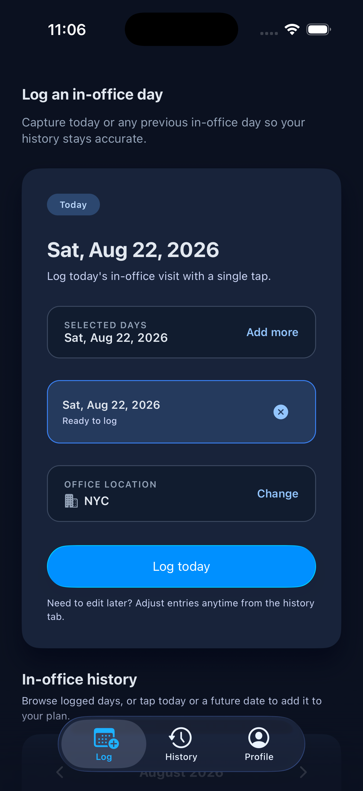
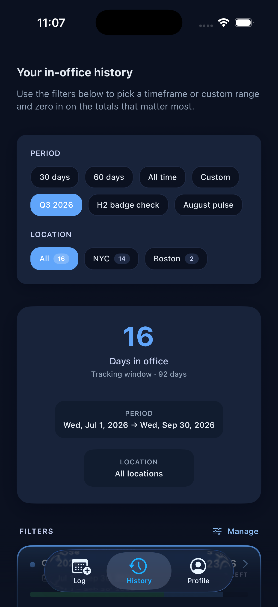
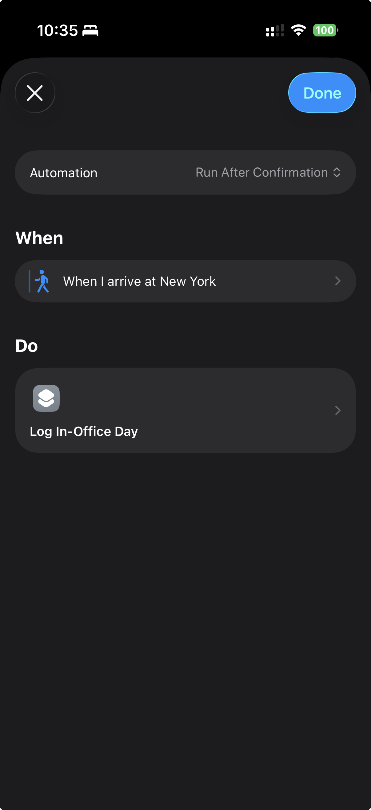
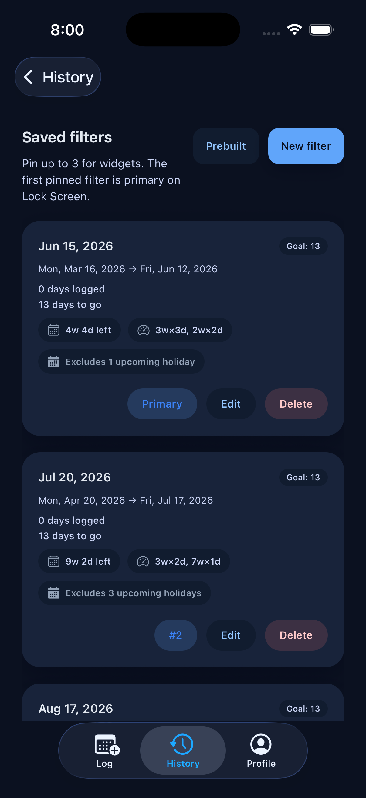
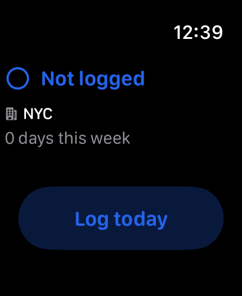
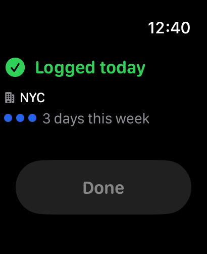

Your office days,
tracked effortlessly.
Log from your iPhone, Apple Watch, Siri, or Shortcuts. Sign in with Apple, Google, or GitHub when you want to back up and sync across devices.
Log your day
Tap today to log it. Your primary office is attached automatically — change it anytime or pick a different one per entry. Need to catch up? Select up to 14 days at once.

Track your history
See how many days you've been in the office over the last 30 days, 60 days, or a custom range. Filter by location to compare across offices.

Manage office locations
Save the offices you visit most often, mark one as your primary location, and let InDays select it automatically when you log from Siri or Apple Watch.
You can keep up to five locations in your profile and change the primary office any time.
Office setup
- Save up to 5 office locations
- Pick a primary office for quick logging
- Reuse it from Siri and Apple Watch
Automate with Shortcuts
Build a Personal Automation in the Shortcuts app and drop in InDays' Log In-Office action. Trigger it when you arrive at the office, leave for the day, or whenever your routine starts.
It uses your primary office automatically, so you can turn a daily commute into a one-tap or no-tap log. InDays does not request device location permission; any arrival or departure trigger is managed by Apple's Shortcuts app.

Sync and manage your account
Use Apple, Google, or GitHub to keep your logs, locations, and filters in sync across devices. If you prefer to stay local, you can keep using the app without signing in.
From Profile → Account, you can review your sign-in method, sign out, or delete your account, synced data, and local data in one place.
Account control
- Apple, Google, or GitHub sign-in
- Sync logs, locations, and filters
- Delete your account from the app
Custom filters & goals
Save date ranges as reusable filters, start from prebuilt ranges, and set a target number of in-office days. InDays tracks your progress and tells you when the goal is met.
History keeps your saved filters handy so you can jump back to the ranges you use most.

Widgets for quick progress
Pin up to three saved filters for widgets. The first pinned filter is primary on Lock Screen, while Home Screen widgets can show progress and log today without opening the app.
Use the compact widget for your primary goal, or the wider widget when you want to keep multiple filters visible at a glance.
Apple Watch companion
See today's status, your primary office, and this week's count at a glance. Tap to log right from your wrist — it syncs automatically with your phone.

